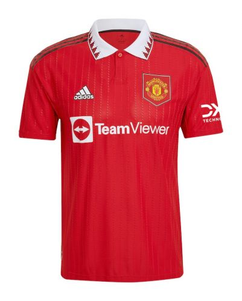
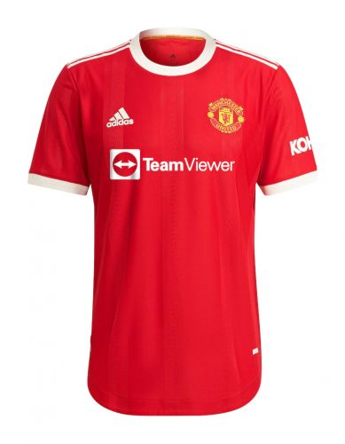
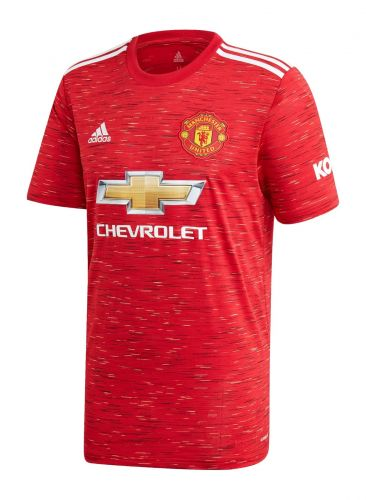
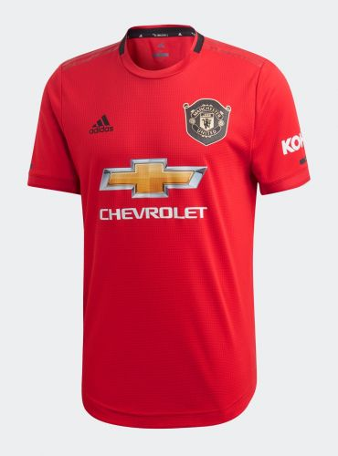
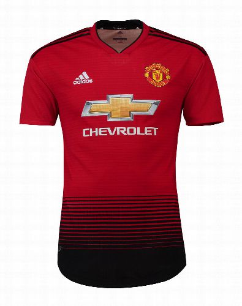
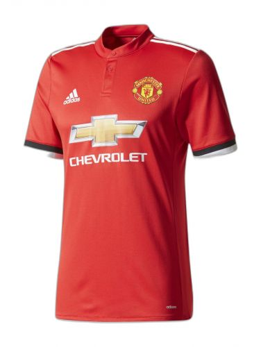
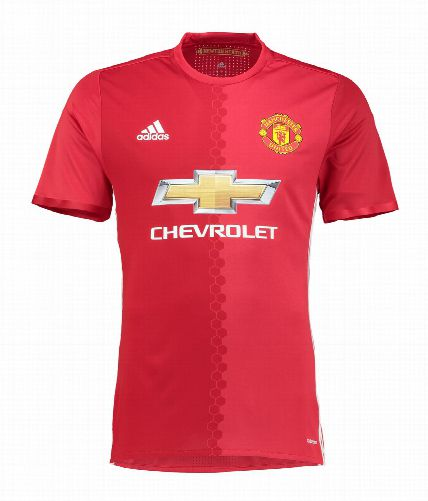
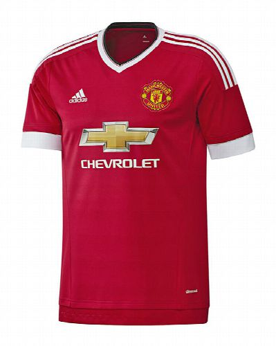

Stats Leaders in Man Utd history
Below, we listed the main stats and its leaders in Man Utd's history.
Top Appearances

Top Scorers

Top Assists
Previous Year's Home Jerseys
Below. there are all Man Utd Home Jerseys over the last 8 years, from the 2022/2023 to the 2015/2016 season.
       Man Utd 22/23 Kit Shoot | Behind The Scenes
Watch now the first impression of the players to Man Utd 2022/2023 Jerseys.